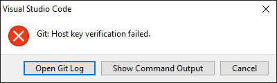

Git guides

Git terminology
- Git
-
A version control system. Used by ASAM in their projects.
- GitLab
-
Popular Open Source platform ASAM uses that leverages Git.
- Remote
-
The server, i.e. not on your PC, often used to refer to the master repository of a project on a server. The default name on (local) git is "origin".
- Local
-
A locally (on your pc) stored (cloned) version of the remote repository.
- Working Copy
-
Files that are not yet handled by git or that contain changes git is not "aware" of.
- Staging Area
-
Collection of files or changes that git is aware of but that are not yet part of the history.
- Merge Request
-
If the changes made in a separate branch of a project are to be combined with another branch (usually the main or master branch), a Merge Request is triggered to review the changes and solve any conflicts where two independently made changes on the same file would interfere with one another.
Git actions
- Clone
-
Done once to obtain a local copy of a remote repository.
- Add
-
Will add new and changed files to the Staging Area.
- Commit
-
Save the state of a repository (ideally with a "commit message" that gives some background). This "snapshot" only applies to the local repository. It applies the staging area or, if used with the command '-a', all changes, staged or unstaged.
- Push
-
Copy the committed changes to the remote.
- Pull
-
Update your local copy with all changes that have been made to the remote.
- Branch
-
Diverge from the main line of development by creating a branch; this has a pointer to a specific commit in the parent to make it clear where it started.
- Merge
-
Integrate the changes made in one branch into another. Most times, this is used to integrate the changes from your branch to the main (master) branch.
Working with git
| It is best practice to check for changes on remote before changing files locally and before pushing changes to remote. |
The Git workflow for making changes is a 3 step process:

-
Add files from the working copy to the staging area.
-
Commit staged files to your local repo.
-
Push to a remote repository.
Cloning A Repository With Git
If you want to work on a repository locally, you need to first check it out from remote (GitLab). To do so, follow one of the cloning instructions below.
| If your project contains submodules, make sure to also update them. See Submodules in git for more information. |
Cloning A Repository Using Visual Studio Code
| This only needs to be done once to obtain a local copy. |
-
Find the repository url on the website and copy the git url
-
Open the Visual Studio Code command palette, type
Git: Clone, then press Enter -
Paste the copied git url and press Enter
-
Select the folder on your PC where you want to save the repository
|
If you encounter an error that the host key verification failed, you need to add GitLab to your known_host file.  |
Cloning A Repository Using Git Bash / Powershell
-
Find the repository url on the website and copy the git url
-
Open the folder on your PC where you want to save the repository
-
Open the Git Bash from the Context Menu (right-click → Select "Git Bash Here")
-
Type
git clone --recurse-submodulesand then press the middle mouse button to paste the copied url. Confirm with EnterWith this command, you do not need to manually initialize the submodules after checkout!
| Alternatively to the Git Bash, you can also use the PowerShell with the same commands. Make sure to open your Powershell in your directory, though. |